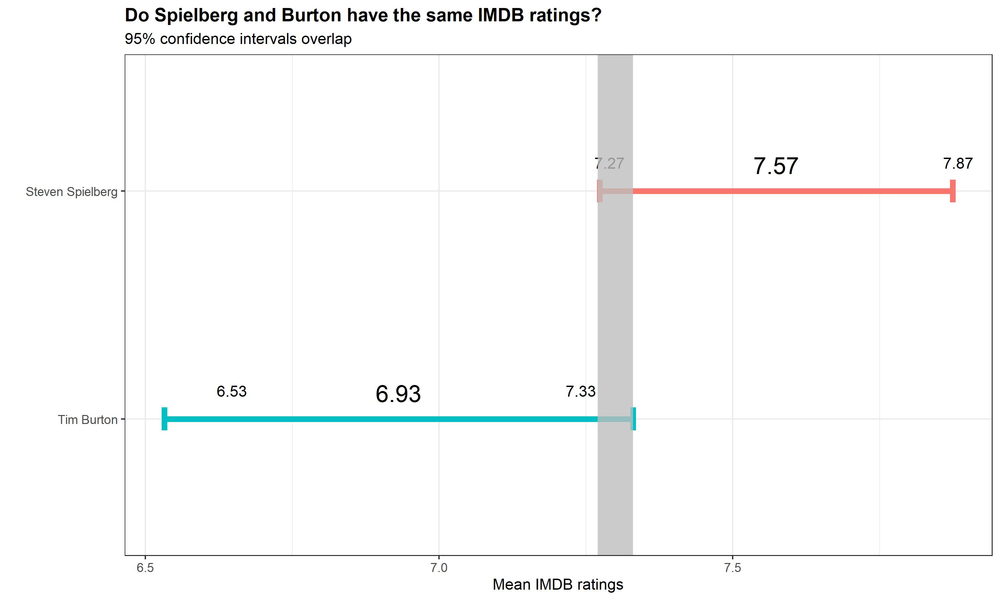

The genius of Steven Spilberg
This project was realized in collaboration with my study group at London Business School. We exercised our R skills by looking at the relative ratings of the movies from two famous directors.
A couple weeks ago, we analyzed some data on IMBD ratings. Today, we will explore if there is a clear difference in the ratings received between Tim Burton and Steven Spielberg.
Our Null Hypothesis: The true difference in means is equal to 0.
Alternative hypothesis: The true difference in means is not equal to 0.
To test this hypothesis, we will use both the t.test command and the infer package to simulate from a null distribution, where you assume zero difference between the two.
# Now, we want to select the date that we will use which is the rating and the directors
IMBD <- movies %>%
select(rating, director) %>%
# We also filtered by the two directors in question
filter(director %in% c("Tim Burton", "Steven Spielberg")) %>%
# In order to compare both directors, we group by this variable
group_by(director) %>%
# To calculate the necessary information to run a hypothesis test we use summarise
summarise (
# General Statistics
mean_rating =
mean(rating, na.rm = TRUE),
sd_rating =
sd(rating, na.rm=TRUE),
count = n(),
# CI Statistics
se_rating =
sd_rating/sqrt(count),
t_critical =
qt(0.975, count-1),
margin_of_error =
t_critical * se_rating,
lower =
mean_rating - t_critical * se_rating,
upper =
mean_rating + t_critical * se_rating
)
# This line exhibits our calculations
IMBD %>% tbl_df %>% rmarkdown::paged_table()# Now we are going to replicate the graph
graph_directors <-
ggplot(IMBD,
aes(
x= mean_rating,
y = reorder(director,mean_rating)))+
geom_point()+
theme_bw() +
theme(legend.position = "none")+
# The next tree lines include the mean ratings and the upper and lower boundaries of the CI
geom_text(aes(label = round(mean_rating, 2)), size = 6, hjust = 0.5,vjust = -1)+
geom_text(aes(label = round(lower, 2)), hjust = 6, vjust = -2) +
geom_text(aes(label = round(upper, 2)), hjust = -5.5, vjust = -2) +
# This line includes the error bar
geom_errorbar(aes(xmin = lower,
xmax = upper,
colour = director,
fill = director),
width = 0.1,
size = 2) +
# This line includes the shade to the graph in the overlap of the confidence intervals
geom_rect(xmin = 7.27, xmax = 7.33, ymin = 0, ymax = 10, fill = "grey", aes(alpha = 0.1))+
labs(
title = "Do Spielberg and Burton have the same IMDB ratings?",
subtitle = "95% confidence intervals overlap",
x = "Mean IMDB ratings",
y = "") +
theme(plot.title = element_text(face = "bold"))
# Saving our graph
ggsave("graph_directors.jpg",
plot=graph_directors,
width = 10,height = 6)
# Displaying the graph
knitr::include_graphics("graph_directors.jpg")
#Now, we want to select the date that we will use which is the rating and the directors
steve_tim <- movies %>%
select(rating, director) %>%
filter(director %in% c("Tim Burton", "Steven Spielberg"))
# In this line we do the ttest with the previously selected data
t.test(rating ~ director, data = steve_tim)##
## Welch Two Sample t-test
##
## data: rating by director
## t = 3, df = 31, p-value = 0.01
## alternative hypothesis: true difference in means is not equal to 0
## 95 percent confidence interval:
## 0.16 1.13
## sample estimates:
## mean in group Steven Spielberg mean in group Tim Burton
## 7.57 6.93# In order to compare the two methods, we will run the test again using the "infer" package
obs_diff_IMBD <- steve_tim %>%
specify(rating ~ director) %>%
calculate(
stat = "diff in means",
order = c("Tim Burton", "Steven Spielberg"))
null_dist_IMBD <- steve_tim %>%
specify(rating ~ director) %>%
hypothesize(null = "independence") %>%
generate(reps = 1000, type = "permute") %>%
calculate(
stat = "diff in means",
order = c("Tim Burton", "Steven Spielberg"))
ggplot(data = null_dist_IMBD,
aes(
x = stat)) +
geom_histogram()
null_dist_IMBD %>% visualize() +
shade_p_value(obs_stat = obs_diff_IMBD, direction = "two-sided")
null_dist_IMBD %>%
get_p_value(obs_stat = obs_diff_IMBD, direction = "two_sided")## # A tibble: 1 x 1
## p_value
## <dbl>
## 1 0.012Conclusion Following our tests, we reject the null hypothesis as the p-value is under our treshold at 95% confidence interval. We can therefore conclude that there is a clear difference between the average rating between Steven Spielberg and Tim Burton. So clearly, Steven Spielberg’ movies have a higher rating than Tim Burton’s ones.